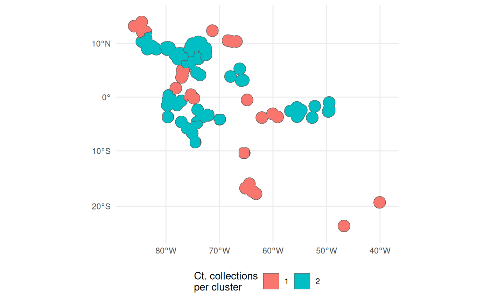

Isolation by Resistance Sampling
Landscape genetics has laddered null hypothesis regarding the genetic structure of species. The first null, Panmixia, is that populations show no differentiation, as could be observed in a species with few, highly connected populations; it is not treated as a sampling scenario by this package. The second null is Isolation by Distance, the main idea behind most of the functions in this package, where populations become more differentiated as a function of geographic distance - culminating in the function ‘IBDBasedSample’. The final null hypothesis is Isolation by Resistance, where the differentiation of populations is driven by environmental distances across populations decreasing gene flow.
While IBD is easily calculated from geographic distances, IBR
requires a parameterized cost surface, in raster format, that depicts
the costs to an organism’s movement of maternal and paternal genetic
material. safeHavens supports a simple workflow to
paramterize a cost surface, that can be used to support basic
IBR type sampling.
Example
Species occurrence data from the dismo package will be used again for this. A few spatial data sets that should be suitable for nearly all users applications are also used in this example, but they are not shipped with this package. They include: - lakes, Lehner et al. 2025, GLWD - oceans from Natural Earth, https://www.naturalearthdata.com/downloads/10m-physical-vectors/ - rivers from FAO, - tri (terrain ruggedness index), Amatulli et al. 2018, https://www.earthenv.org/topography
library(terra)
#> terra 1.8.93
library(sf)
#> Linking to GEOS 3.12.1, GDAL 3.8.4, PROJ 9.4.0; sf_use_s2() is TRUE
library(dplyr)
#>
#> Attaching package: 'dplyr'
#> The following objects are masked from 'package:terra':
#>
#> intersect, union
#> The following objects are masked from 'package:stats':
#>
#> filter, lag
#> The following objects are masked from 'package:base':
#>
#> intersect, setdiff, setequal, union
library(ggplot2)
library(safeHavens)Load the dismo example data again.
data prep
Each of the environmental variable data sources needs some
pre-processing before being feed into the IBR workflow. Here we rescale
the tri rasters, to put them on a similar numeric range as the other
data sets. The other data sets, which are vectors, are also slightly
filtered, and converted from sf to spatVect objects for better use with
terra.
tri <- terra::rast(file.path(system.file(package = "safeHavens"), "extdata", "tri.tif"))
names(tri) <- 'tri'
rescale_rast <- function(r, new_min = 0, new_max = 1) {
r_min <- global(r, "min", na.rm = TRUE)[[1]]
r_max <- global(r, "max", na.rm = TRUE)[[1]]
((r - r_min) / (r_max - r_min)) * (new_max - new_min) + new_min
}
tri <- rescale_rast(tri, 0, 100)
lakes_v <- sf::st_read(
file.path(system.file(package = "safeHavens"), "extdata", "lakes.gpkg"),
quiet = T) |>
st_set_crs(4326) |> ## messed up shape, manually tell it the crs.
filter(TYPE == 'Lake') |> # remove reservoirs for our purposes (time scale)
select(geometry = geom) |>
mutate(Value = 1) |> # this will be rasterized.
terra::vect()
ocean_v <- sf::st_read(
file.path(system.file(package = "safeHavens"), "extdata", "oceans.gpkg"),
quiet = T) |>
select(geometry = geom) |>
mutate(Value = 1) |>
terra::vect()
rivers_v <- sf::st_read(
file.path(system.file(package = "safeHavens"), "extdata", "rivers.gpkg"),
quiet = T) |>
select(geometry = geom) |>
mutate(Value = 1) |>
terra::vect()We’ll convert each of the above spatVect objects to spatRasters, and clip them to an area of analysis around our species records.
x_buff <- sf::st_transform(x, planar_proj) |>
# huge buffer for the bbox.
st_buffer(200000) |>
st_transform(crs(lakes_v)) |>
st_as_sfc() |>
st_union() |>
vect() |>
ext()
lakes_v <- crop(lakes_v, x_buff)
rivers_v <- crop(rivers_v, x_buff)
ocean_v <- crop(ocean_v, x_buff)
tri <- crop(tri, x_buff)The vector data need to be converted to raster format using a
function like rasterize, from terra.
ocean_r <- rasterize(ocean_v, tri, field = 'Value', background = 0.1)
lakes_r <- rasterize(lakes_v, tri, field = 'Value', background = 0.1)
rivers_r <- rasterize(rivers_v, tri, field = 'Value', background = 0.1)
par(mfrow=c(2, 2))
plot(rivers_r)
plot(lakes_r)
plot(ocean_r)
plot(tri)
actual workflow.
The first, of three, functions in the Isolation by Resistance
sampling workflow is used to create the resistance surface. It requires
a template raster, and the other rasters which will be incorporated into
the product. buildResistanceSurface essentially just
requires the rasters we configured above, and user specified weights to
assign to each raster. These weights convey how difficult it is for a
species to move across the landscape. For plants, oceans generally get
very high weight, while lakes and rivers - still obstacles - receive
lower weights. Terrain ruggedness values are much more likely to vary
based on both the ecology of the species, and the lanscape being
sampled.
When considering weights consider the influences of: bird dispersal, land animal dispersal, and natural growth/expansion of populations. This is certainly the most difficult part of this workstream to tune. The values below are the functions defaults - to my eyes they work OK for the landscape at hand; although an ecologist with experience in this region may beg to differ, and I would not argue with them.
res_surface <- buildResistanceSurface(
base_raster = rast(ocean_r), # template
oceans = ocean_r, # rasters
lakes = lakes_r,
rivers = rivers_r,
tri = tri,
w_ocean = 120, # weights to multiple input raster values by --
w_lakes = 50, # is 1 * 50
w_rivers = 20, # is 1 *20
w_tri = 4 # ranges from 1~30, so from (1-30)*4 up to a weight of ~120.
)
terra::datatype(res_surface)
#> [1] ""
plot(res_surface)
Note that the above object will be stored in memory, I advocate for the use of a relatively coarsely grained raster surface, because we are doing pretty generalized work, and it will speed up processing.
The next step is calculating the distances between the areas of the
raster surfaces. Similar to other functions in safeHavens
we will not use population occurrence record data directly, as we know
that spatial biases affect occurrence record distributinons. Rather we
will buffer (buffer_dist) the occurrence records, using a
relevant planar_proj, and create a raster surface of their
locations. From this surface we will sample n points (using
terra::spatSample, with method = ‘spread’), and identify neighboring
points using a graph_method, either delauney triangulation,
which is useful when a very high n is required, or through
a complete distance matrix.
This function will return a raster depicting the buffered populations (species range in the domain), the points sampled by terra, the graph information, and a distance matrix with the least cost distance values from the resistance surface.
pop_res_graphs <- populationResistance(
base_raster = rast(ocean_r),
populations_sf = x,
n = 150,
planar_proj = 3857,
buffer_dist = 75000,
resistance_surface = res_surface,
graph_method = 'complete'
)
#> Warning: Quick-TRANSfer stage steps exceeded maximum (= 2557900)
names(pop_res_graphs)
#> [1] "pop_raster" "sampled_points" "spatial_graph" "edge_list"
#> [5] "ibr_matrix"The buffered locations look like this - currently the IDs are meaningless.
plot(pop_res_graphs$pop_raster)
This function does not perform well with user pre-specified
n, however the min.nc parameter, passed to
NbClust can be applied to generally give the analyst specified
value.
ibr_groups <- IBRSurface(
base_raster = rast(ocean_r),
resistance_surface = res_surface,
pop_raster = pop_res_graphs$pop_raster,
pts_sf = pop_res_graphs$sampled_points,
ibr_matrix = pop_res_graphs$ibr_matrix,
min.nc = 9,
planar_proj = 3857
)
#> Warning in min.default(structure(numeric(0), units = structure(list(numerator =
#> "m", : no non-missing arguments to min; returning InfThe results of the clustering process are visualized beneath.
classified_pts = ibr_groups$points
plot(res_surface)
points(
classified_pts,
pch = as.numeric(as.factor(classified_pts$ID)), # different symbol per ID
col = rainbow(length(unique(classified_pts$ID)))[as.factor(classified_pts$ID)],
cex = 2,
lwd = 3
)
The classified occupied area clusters are visualized below.

Finally the surface can be sampled using
PolygonBasedSample. Simply union the geometries to be the
species range, and supply the groups to the x argument, in lieu of an
ecoregion or pstz type surface.
out <- PolygonBasedSample(
x = st_union(ibr_groups$geometry),
zones = ibr_groups$geometry,
zone_key = 'ID',
n = 20)
#> Warning in st_collection_extract.sf(zones_poly, "POLYGON", warn = FALSE): x is
#> already of type POLYGON.
#> Warning in st_collection_extract.sf(zones_sub, "POLYGON", warn = FALSE): x is
#> already of type POLYGON.
ggplot(data = out) +
geom_sf(aes(fill = factor(allocation))) +
theme_minimal() +
labs(fill = 'Ct. collections\nper cluster') +
theme(legend.position = 'bottom')
Each of the nine clusters has a different number of the 20 desired collections assigned to it.